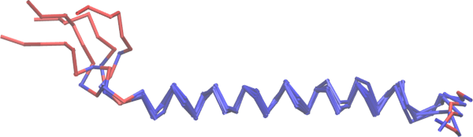

Structural alignment
MolSimToolkit.jl provides tools to perform rigid-body structural alignment throughout trajectories.
Two types of alignments are avaialble: the "standard" rigid-body alignment, frequently used to compute RMSDs and RMSFs in MD trajectories, and a robust structural alignment method, mdlovofit. The robust alignment method provides better alignments of the rigid (or core) fractions of the structures, while magnifying the variability of the flexibile regions.
Conventional rigid-body alignment
Conventional rigid-body aligments routines are:
MolSimToolkitShared.rmsd — Functionrmsd(simulation::Simulation, indices::AbstractVector{<:Integer}; mass = nothing, reference_frame = nothing, show_progress = true)Computes the root mean square deviation (RMSD) between two sets of points in along a trajectory.
Arguments
indicesvector contains the indices of the atoms to be considered.massargument can be used to provide the mass of the atoms if they are not the same.reference_frameargument can be used to provide a reference frame to align the trajectory to:- If
reference_frame == nothing, the first frame will be used (default behavior). - If
reference_frame == :average, the average structure will be used. - If
reference_frameis an integer, the frame at that index will be used as reference.
- If
Examples
Computing the rmsd along a trajectory
julia> using MolSimToolkit, MolSimToolkit.Testing
julia> using PDBTools
julia> atoms = readPDB(Testing.namd_pdb);
julia> simulation = Simulation(Testing.namd_pdb, Testing.namd_traj);
julia> cas = findall(sel"name CA", atoms); # CA indices
julia> rmsd(simulation, cas; show_progress=false)
5-element Vector{Float64}:
0.0
2.8388710154609034
2.9776998440690385
2.4621444212469483
3.8035683196100796
julia> rmsd(simulation, cas; reference_frame=:average, show_progress=false)
5-element Vector{Float64}:
1.8995986972454748
2.1512244220536973
1.5081703191869376
1.1651111324544219
2.757039151265317rmsd(x::AbstractVector,y::AbstractVector)Calculate the root mean square deviation between two vectors of coordinates.
Arguments
x::AbstractVector: A vector of coordinates.y::AbstractVector: A vector of coordinates.
Returns
rmsd::Real: The root mean square deviation between the two vectors.
julia> import MolSimToolkitShared: rmsd
julia> x = [ [1.0, 2.0, 3.0], [4.0, 5.0, 6.0], [7.0, 8.0, 9.0] ];
julia> y = [ [2.0, 3.0, 4.0], [4.0, 5.0, 6.0], [7.0, 8.0, 9.0] ];
julia> rmsd(x, y)
1.0MolSimToolkit.rmsd_matrix — Functionrmsd_matrix(
simulation::Simulation,
indices::AbstractVector{<:Integer};
mass::Union{AbstractVector{<:Integer}, Nothing} = nothing,
align::Bool = true,
show_progress = true,
)Computes the RMSD matrix for a set of atoms along a trajectory.
The indices vector contains the indices of the atoms to be considered. The mass argument can be used to provide the mass of the atoms if they are not the same. The align argument can be used to align the frames before computing the RMSD.
The show_progress argument can be used to show a progress bar.
Returns
A symetric matrix with the RMSD values between each pair of frames. For example, in a trajectory with 5 frames, the matrix will be a 5x5 matrix with the RMSD values between the structures of each pair of frames.
Example
julia> using MolSimToolkit, MolSimToolkit.Testing
julia> using PDBTools
julia> atoms = readPDB(Testing.namd_pdb);
julia> cas = findall(Select("name CA"), atoms); # CA indices
julia> simulation = Simulation(Testing.namd_pdb, Testing.namd_traj);
julia> rmsd_matrix(simulation, cas; show_progress=false)
5×5 Matrix{Float64}:
0.0 2.83887 2.9777 2.46214 3.80357
2.83887 0.0 2.35492 2.64463 4.68028
2.9777 2.35492 0.0 2.08246 3.46149
2.46214 2.64463 2.08246 0.0 2.97835
3.80357 4.68028 3.46149 2.97835 0.0MolSimToolkitShared.center_of_mass — Functioncenter_of_mass(
indices::AbstractVector{Int};
simulation::Simulation,
positions::FramePositions,
iref::Union{Nothing,Int} = max(1, div(length(indices),2)),
)Calculate the center of mass of a selection of atoms in a simulation given the positions. The selection is defined by the indices vector, which is the indices of the atoms.
The iref parameter is the index of the reference atom. The center of mass is calculated by first computing the minimum-image of all atoms relative to this atom. By default, it is the atom closest to the middle of the indices vector. If iref is nothing, the center of mass is calculated without wrapping the coordinates.
julia> using PDBTools
julia> using MolSimToolkit, MolSimToolkit.Testing
julia> simulation = Simulation(Testing.namd_pdb, Testing.namd_traj);
julia> protein_indices = findall(sel"protein", atoms(simulation));
julia> first_frame!(simulation); # move simulation to the first frame
julia> coor = positions(current_frame(simulation));
julia> cm = center_of_mass(protein_indices, simulation, coor)
3-element Point3D{Float64} with indices SOneTo(3):
-3.7290442807974906
-1.5339226637687564
1.960640754560446center_of_mass(x::AbstractVector{<:AbstractVector}[, mass::AbstractVector=nothing])Calculate the center of mass of a set of points.
Arguments
x::AbstractVector{<:AbstractVector}: A vector of coordinates.mass::AbstractVector: A vector of masses. If not provided, all masses are assumed to be equal.
Example
julia> import MolSimToolkitShared: center_of_mass
julia> x = [ [1.0, 2.0, 3.0], [4.0, 5.0, 6.0], [7.0, 8.0, 9.0] ];
julia> center_of_mass(x)
3-element Vector{Float64}:
4.0
5.0
6.0
julia> center_of_mass(x, [1.0, 2.0, 3.0]) # providing masses
3-element Vector{Float64}:
5.0
6.0
7.0
MolSimToolkitShared.align — Functionalign(x, y; mass = nothing)
align!(x, y; mass = nothing)Aligns two structures (sets of points in 3D space). Solves the "Procrustes" problem, which is to find the best translation, and rotation, that aligns the two structures, minimizing the RMSD between them.
Structures are expected to be of the same size, and the correspondence is assumed from the vector indices.
align returns a new vector containing the coordinates of x aligned to y. align! modifies the input vector x in place.
MolSimToolkitShared.align! — Functionalign(x, y; mass = nothing)
align!(x, y; mass = nothing)Aligns two structures (sets of points in 3D space). Solves the "Procrustes" problem, which is to find the best translation, and rotation, that aligns the two structures, minimizing the RMSD between them.
Structures are expected to be of the same size, and the correspondence is assumed from the vector indices.
align returns a new vector containing the coordinates of x aligned to y. align! modifies the input vector x in place.
Robust rigid-body alignment
MDLovoFit is a package for the analysis of the mobility and structural fluctuation in Molecular Dynamics simulations. It allows the automatic identification of rigid and mobile regions of protein structures.
For example, it is possible to automatically identifiy a stable region of a protein in simulation in which the protein displays high structural flexibility, as illustrated in the example. The regions of low mobility are automatically detected by the method.
The software provides, as output, the Root-Mean-Square Deviations of the conserved structures, and of the divergent structures. A trajectory PDB file is output for the visualization of the results.
The execution of the MDLovoFit procedure typically has three steps:
- Step1: Identify the length of the structure that can be aligned with a precision lower than a threshold. This is done with the
map_fractionsfunction. - Step 2: Align the trajectory for the fraction of atoms desired, with the
mdlovofitfunction. - Step 3: Visualize the aligned trajectory and aligned atoms.
Please cite the following references if these functions were useful:
L. Martínez, Automatic identification of mobile and rigid substructures in molecular dynamics simulations and fractional structural fluctuation analysis. PLoS One 10(3): e0119264, 2015. Full text.
L. Martínez. R. Andreani, J. M. Martínez. Convergent Algorithms for Protein Structural Alignment. BMC Bioinformatics, 8, 306, 2007. Full text.
It is possible to use mdlovofit as a standalone program by downloading it here.
Step 1: Map fractions of aligned atoms and overlap precision
MolSimToolkit.map_fractions — Functionmap_fractions(simulation::Simulation; maxframes=nothing)Run MDLovoFit on a trajectory, to obtain the RMSD of the fractions of the structure with the lowest RMSD, the fraction with the highest RMSD, and the whole structure.
Only CA atoms of protein residues are considered.
Argument:
simulationis a Simulation object, with the trajectory of the system and the atom data.
Keyword arguments:
maxframes=nothingis the number of frames to be considered. If nothing, 100 frames are considered. Set tolength(simulation)to consider all frames.
Example
julia> using MolSimToolkit, MolSimToolkit.Testing
julia> sim = Simulation(Testing.namd_pdb, Testing.namd_traj);
julia> mf = map_fractions(sim)
-------------------------------------------------------------------
MapFractionsResult: Simulation(structure.pdb, trajectory.dcd)
-------------------------------------------------------------------
Fields:
- fraction: fraction of atoms considered in the alignment.
- frame_indices: the frame index of each frame considered.
- rmsd_low: RMSD of the fraction of the structure with the lowest RMSD.
- rmsd_high: RMSD of the fraction not considered for the alignment.
- rmsd_all: RMSD of the whole structure.
Greatest fraction for which the RMSD-low is smaller than 1.0: 0.79
2.0: 0.9
3.0: 0.99
-------------------------------------------------------------------MolSimToolkit.MapFractionsResult — TypeMapFractionsResultData structure to store the output of the map_fractions function.
Fields:
simulationis a Simulation object with the trajectory of the system and the atom data.frame_indicescontains the frame index of each frame considered.fractioncontains the fraction of atoms considered in the alignment.rmsd_lowcontains the RMSD of the fraction of the structure with the lowest RMSD.rmsd_highcontains the RMSD of the fraction not considered for the alignment.rmsd_allcontains the RMSD of the whole structure.
RecipesBase.plot — Methodplot(mf::MapFractionsResult; xlabel="fraction of aligned residues", ylabel="RMSD", kargs...)Plot the results of a map fractions calculation.
The map_fractions function scans the trajectory and tries to align the C$\alpha$ atoms of the protein structures, but considering only a fraction of the atoms for the alignment. The alignment is performed such that only the fraction of atoms of smaller displacements interfere with the overlap. Three RMSDs are then obtained: the RMSD of the best aligned atoms, the RMSD of the remaining (highly mobile) atoms, and the RMSD of all atoms. For example:
using MolSimToolkit, MolSimToolkit.Testing
# Create Simulation object from pdb and trajectory file names
sim = Simulation(Testing.namd_pdb, Testing.namd_traj)
# Run map_fractions
mf = map_fractions(sim)-------------------------------------------------------------------
MapFractionsResult: Simulation(structure.pdb, trajectory.dcd)
-------------------------------------------------------------------
Fields:
- fraction: fraction of atoms considered in the alignment.
- frame_indices: the frame index of each frame considered.
- rmsd_low: RMSD of the fraction of the structure with the lowest RMSD.
- rmsd_high: RMSD of the fraction not considered for the alignment.
- rmsd_all: RMSD of the whole structure.
Greatest fraction for which the RMSD-low is smaller than 1.0: 0.79
2.0: 0.9
3.0: 0.99
-------------------------------------------------------------------In the above run, we can readily see that 79% of the atoms of the structure can be aligned with RMSD smaller than 1.0Å. The RMSDs of the low and high mobility, and all-C$\alpha$ RMSDs are available as the fields of the mf object generated.
A convenience recipe can plot the results:
using Plots
plot(mf)Where we see that about 80% of atoms can be aligned to less than 1.0Å RMSD, while at the same time the 20% more flexible atoms will display an RMSD of about 7Å.
We will now consider that, in this case, 1.0Å is a good threshold for defining the conserved structural core of the protein, and proceed with the next analysis, where we will ask mdlovofit to obtain the best alignment of 80% of the atoms, of each frame relative to the first frame.
Step 2: Align the trajectory for a given fraction of atoms
MolSimToolkit.mdlovofit — Functionmdlovofit(
simulation::Simulation;
fraction::AbstractFloat,
output_name::Union{String,Nothing} = nothing,
reference_frame::Int = 1,
maxframes=nothing
)Run MDLovoFit on a trajectory, aligning only the atoms which are in the fraction of the structure with the lowest RMSD. Only CA atoms of protein residues are considered.
Arguments:
simulationis a Simulation object, with the trajectory of the system and the atom data.fractionis the fraction of atoms to be considered in the alignment.
Optional arguments:
output_name=nothingis the base name of the output files. If nothing, default names will be used.reference_frame=1is the index of the frame to be used as reference for the alignment.maxframes=nothingis the number of frames to be considered. If nothing, 100 frames are considered. Set tolength(simulation)to consider all frames.
Output:
MDLovoFitResultdata structure with the results of the alignment.
and the output files:
output_name_rmsf.datwith the RMSF data.output_name_rmsd.datwith the RMSD data.output_name_aligned.pdbwith the aligned structure.
Example
julia> using MolSimToolkit, MolSimToolkit.Testing
julia> sim = Simulation(Testing.namd_pdb, Testing.namd_traj);
julia> md = mdlovofit(sim, fraction=0.7, output_name="mdlovofit_50")
-------------------------------------------------------------------
MDLovoFitResult: Simulation(structure.pdb, trajectory.dcd)
-------------------------------------------------------------------
Aligned pdb file: mdlovofit_50_aligned.pdb
RMSF data file: mdlovofit_50_rmsf.dat
RMSD data file: mdlovofit_50_rmsd.dat
Number of frames considered: 5
Average RMSD of all atoms: 1.79
Average RMSD of the 70.0% atoms of lowest RMSD: 0.53
Average RMSD of the 30.0% atoms of highest RMSD: 4.71
Frame indices availabe in field: frame_indices
RMSD data availabe in fields: rmsd_low, rmsd_high, and rmsd_all
RMSF data availabe in field: rmsf (Number of atoms: 43)
-------------------------------------------------------------------MolSimToolkit.MDLovoFitResult — TypeMDLovoFitResultData structure to store the output of the mdlovofit function.
Fields:
simulation: Simulation object with the trajectory of the system and the atom data.frame_indices: vector with the frame index of each frame.rmsd_low: RMSD of the fraction of the structure with the lowest RMSD.rmsd_high: RMSD of the fraction of the structure with the highest RMSD.rmsd_all: RMSD of the whole structure.rmsf: RMSF as a function of the residue or atom index.rmsf_file: name of the file with the RMSF data.rmsd_file: name of the file with the RMSD data.aligned_pdb: name of the PDB file with the aligned structure.
RecipesBase.plot — Methodplot(md::MDLovoFitResult;
xlabel=["frame" "residue"],
ylabel=["RMSD / Å" "RMSF / Å"],
yticks=[(0:1:maximum(md.rmsd_high),0:1:maximum(md.rmsd_high)) (0:1:maximum(md.rmsf),0:1:maximum(md.rmsf))],
ylims=[(0, maximum(md.rmsd_high)) (0, maximum(md.rmsf))],
stride=nothing,
kargs...
)Plot the results of a MDLovoFit calculation. The stride argument can be used to control the number of xtick residues plotted in the RMSF plot.
Continuing with the above example, now we will call the mdlovofit function, to obtain the best aligment of 80% of the atoms in each frame relative to the first frame:
md = mdlovofit(sim; fraction=0.8, output_name="mysim")-------------------------------------------------------------------
MDLovoFitResult: Simulation(structure.pdb, trajectory.dcd)
-------------------------------------------------------------------
Aligned pdb file: mysim_aligned.pdb
RMSF data file: mysim_rmsf.dat
RMSD data file: mysim_rmsd.dat
Number of frames considered: 5
Average RMSD of all atoms: 2.01
Average RMSD of the 80.0% atoms of lowest RMSD: 1.13
Average RMSD of the 20.0% atoms of highest RMSD: 5.31
Frame indices availabe in field: frame_indices
RMSD data availabe in fields: rmsd_low, rmsd_high, and rmsd_all
RMSF data availabe in field: rmsf (Number of atoms: 43)
-------------------------------------------------------------------We now see that we can, in average, align 80% of the atoms in all frames to 1.13Å. The output RMSD and RMSF data is available in the md data structure, and additionally three files were generated, containing:
mysim_aligned.pdb: a sequence of PDB files of the aligned trajectory.mysim_rmsd.dat: the RMSD data for low, high, and all atoms.mysim_rmsf.dat: the RMSF data for the atoms, resulting from the robust alignment.
We can plot an overview of the results with:
plot(md)And we can see that, in this short (5-frame) trajectory, the N-terminal region of the protein is the one responsible for the structural deviations, while there is a rigid structural core between residues I221 and K249.
Step 3: Visualization of the aligned trajectory
The PDB file created by mdlovofit contains the frames aligned to the reference frame, according to the robust alignment based on the least mobile substructure (determined by fraction). The file contains multiple models, separated by the END keyword.
The occupancy field of the atoms determines if the atom was used in the aligment, thus if it was found among the least mobile atoms of the simulation. The beta field contains the RMSF of the atom, in each frame.
Using, for example, VMD, it is possible to display all frames at once, colored by occupancy, providing an overview of the mobility of the structure:

This structural superposition and the associated colors are correlatd with the RMSF plot above. Red atoms were not used for the aligment and display high mobility, and blue atoms represent the stable core of the structure and were aligned.